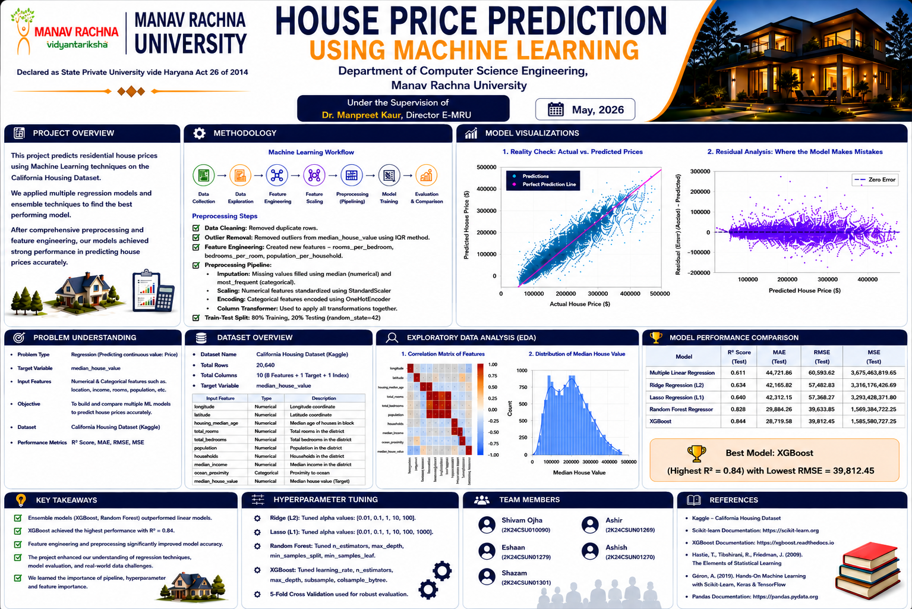

Official Competition Poster

Manav Rachna University · Dept. of Computer Science Engineering · May 2026
Portfolio Case Study · May 2026
How a team of five CSE students tackled California housing price prediction — 15 model iterations, a few honest failures, and one satisfying breakthrough using Lasso Regression.
Final R²
Versions
Features Kept
RMSE
Benchmark
01 — The Challenge
Predict California residential house prices from census data. The twist: we couldn't just optimise accuracy — we had to pick one algorithm, defend every decision across 15 versions, and explicitly link it to a deep learning concept.
I was assigned Lasso Regression (L1) and asked to map it to Dropout in neural networks. That constraint turned a routine regression problem into a study of sparsity itself.
Problem
Forecast median house value per California census block (USD) using geographic, structural, and socio-economic features.
Team
Eshaan · Ashir · Shivam · Shazan · Ashish — each responsible for one model, supervised by Dr. Manpreet Kaur.
02 — Methodology
Data Cleaning
Removed duplicate rows; applied IQR outlier removal on median_house_value;
imputed missing total_bedrooms with median.
Feature Engineering
Created rooms_per_household, bedrooms_per_room,
population_per_household. OneHot-encoded ocean_proximity. StandardScaler applied
inside ColumnTransformer pipeline.
Train / Test Split
80 / 20 split · random_state=42 · 20,640 rows total after cleaning.
Iteration Strategy
15 progressive versions: V1 baseline → feature engineering → alpha sweep → solver experiments → V14 deliberate failure → V15 final refinement.
03 — Alpha Tuning
L1 penalty α controls how aggressively features are zeroed out. Too low = overfit noise. Too high = underfit signal. α = 500 was the optimum.
04 — Champion Model
| Parameter | Value |
|---|---|
| Alpha | 500.0 |
| Solver | Cyclic coordinate descent |
| Max iterations | 5,000 |
| Non-zero features | 13 / 15 |
| Train R² | 61.87% |
| Test R² | 63.74% |
| Test RMSE | 57,908 |
| Test MAE | 42,723 |
"Accuracy improved by discarding information. That felt counterintuitive — until it felt inevitable."
— Notes after V7 training runKey insight
When V7 dropped 2 features and test R² went up, it confirmed that those features were adding noise, not signal. Lasso's self-selection was correct — and measurably so.
05 — Failures & Fixes
Mistakes made:
positive=True — R² dropped to 56.51%, destroying valid
negative coefficients (e.g. latitude)ocean_proximity as string — encoder crashed mid-fitHow each got fixed:
06 — Deep Learning Connection
The required deliverable was drawing a rigorous parallel between Lasso's L1 penalty and Dropout regularization. It's more than an analogy — it's the same underlying principle.
What gets zeroed
Lasso zeros feature weights. Dropout zeros neuron activations. Both create sparse representations.
Co-dependency
L1 picks one representative from correlated features. Dropout forces neurons to learn independently. Same goal.
Shared principle
Both achieve better generalisation not by adding parameters — but by constraining which ones contribute.
Key difference
Lasso is deterministic (same features removed after convergence). Dropout is stochastic (random mask per batch).
| Dimension | Lasso (L1) | Dropout |
|---|---|---|
| What gets zeroed | Feature weights (coefficients) | Neuron activations (per batch) |
| Mechanism | Deterministic — L1 penalty drives small weights to zero | Stochastic — Bernoulli mask at train time |
| Hyperparameter | Alpha α | Dropout rate p |
| Interpretability | High — zero coef = feature eliminated | Low — mask varies per pass |
| Origin | Tibshirani, 1996 | Srivastava et al., 2014 |
| Shared: both enforce sparse representations to prevent overfitting — different mechanisms, same geometry | ||
07 — Model Comparison
| Model | R² (Test) | MAE | RMSE |
|---|---|---|---|
| Multiple Linear Regression | 0.61 | 44,722 | 60,604 |
| Ridge Regression (L2) | 0.63 | 43,103 | 57,868 |
| Lasso (L1) — Ours | 0.64 | 42,723 | 57,908 |
| Random Forest | 0.80 | 29,843 | 43,984 |
| XGBoost (benchmark) | 0.84 | 26,720 | 39,812 |
Lasso outperforms both linear baselines. Gap vs XGBoost is expected — Lasso is linear; XGBoost captures non-linear interactions. This is a feature limitation, not a failure.
08 — Reflection
The 15-version structure forced patience. I couldn't skip to the champion model because I didn't know it was the champion yet — I had to discover it by being systematic.
V14's failure was the most instructive moment. I imposed a sign constraint that wasn't supported by the data, performance tanked, and I spent hours thinking it was a code bug. Writing it up openly as a negative result with a clear explanation felt more valuable than hiding it. Failure is evidence too.
This wasn't just a competition. It was the first time I felt like an engineer rather than a student running someone else's code.